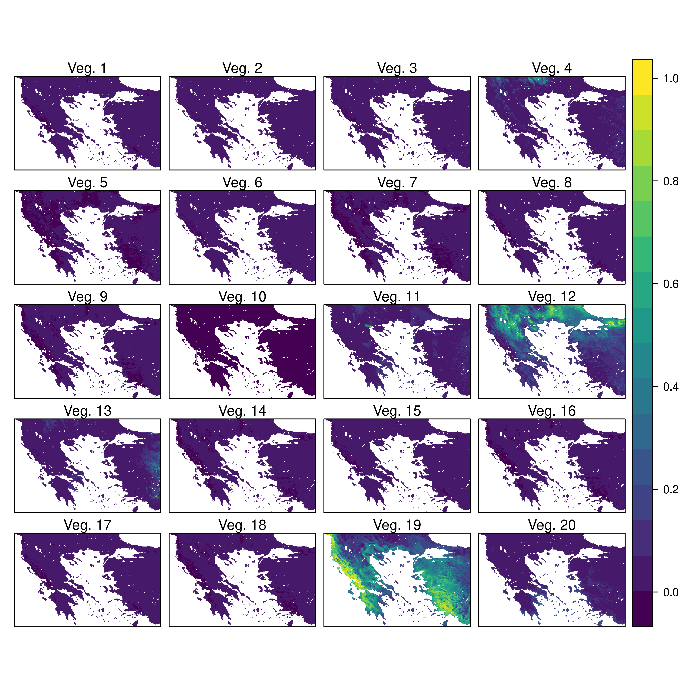
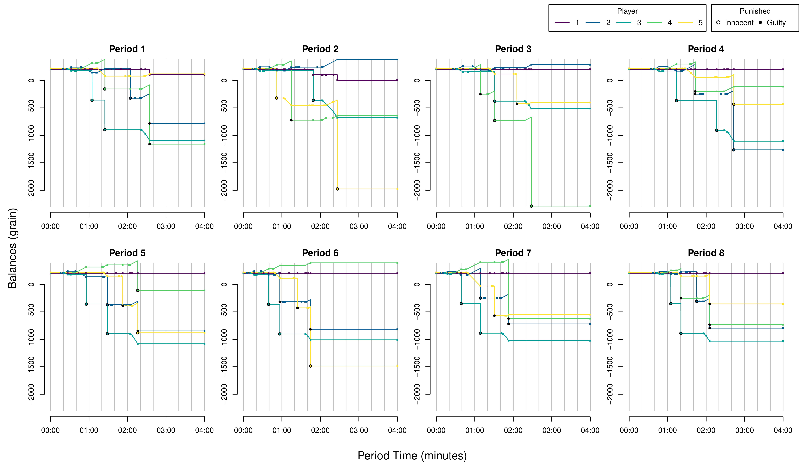
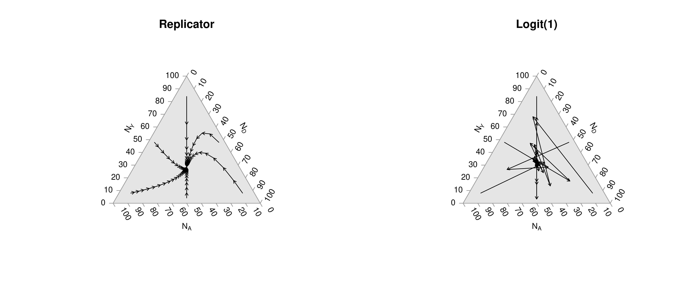
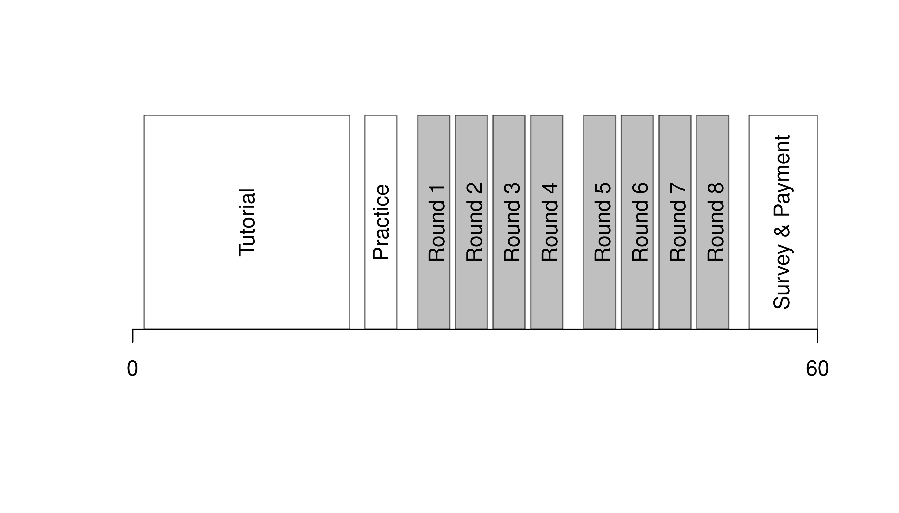

6 Beyond Basics
6.1 The R Ecosystem
Use expansion “packages” for common procedures and more functionality
6.1.1 Packages
CRAN Most packages can be found on CRAN and can be easily installed
## commonly used packages
install.packages("stargazer")
install.packages("data.table")
## install.packages("purrr")
## install.packages("reshape2")The most common tasks also have cheatsheets you can use. E.g., https://github.com/rstudio/cheatsheets/blob/main/rstudio-ide.pdf
Github Sometimes you will want to install a package from GitHub. For this, you can use devtools or its light-weight version remotes
Note that to install devtools, you also need to have developer tools installed on your computer.
To color terminal output on Linux systems, you can use the colorout package
library(remotes)
# Install https://github.com/jalvesaq/colorout
# to .libPaths()[1]
install_github('jalvesaq/colorout')
library(colorout)Base While additional packages can make your code faster, they also create dependancies that can lead to problems. So learn base R well before becoming dependant on other packages
6.1.2 Task Views
Task views list relevant packages.
For all students and early researchers,
For microeconometrics,
For spatial econometrics
- https://cran.r-project.org/web/views/Spatial.html
- https://cran.r-project.org/web/views/SpatioTemporal.html
Multiple packages may have the same function name for different commands. In this case use the syntax package::function to specify the package. For example
Don’t fret Sometimes there is not a specific package for your data.
Odds are, you can do most of what you want with base code.
- Packages just wrap base code in convient formats
- see https://cran.r-project.org/web/views/ for topical overviews
Statisticians might have different naming conventions
- if the usual software just spits out a nice plot you might have to dig a little to know precisely what you want
- your data are fundamentally numbers, strings, etc… You only have to figure out how to read it in.
6.2 Introductions to R
There are many good yet free programming books online. Some of my examples originally come from https://r4ds.had.co.nz/ and I recommend https://intro2r.com. But I have used online material from many places over the years, including
- https://cran.r-project.org/doc/manuals/R-intro.html
- R Graphics Cookbook, 2nd edition. Winston Chang. 2021. https://r-graphics.org/
- R for Data Science. H. Wickham and G. Grolemund. 2017. https://r4ds.had.co.nz/index.html
- An Introduction to R. W. N. Venables, D. M. Smith, R Core Team. 2017. https://colinfay.me/intro-to-r/
- Introduction to R for Econometrics. Kieran Marray. https://bookdown.org/kieranmarray/intro_to_r_for_econometrics/
- Wollschläger, D. (2020). Grundlagen der Datenanalyse mit R: eine anwendungsorientierte Einführung. http://www.dwoll.de/rexrepos/
- Spatial Data Science with R: Introduction to R. Robert J. Hijmans. 2021. https://rspatial.org/intr/index.html
What we cover in this primer should be enough to get you going. But there are also many good yet free-online tutorials and courses.
- https://www.econometrics-with-r.org/1.2-a-very-short-introduction-to-r-and-rstudio.html
- https://rafalab.github.io/dsbook/
- https://moderndive.com/foreword.html
- https://rstudio.cloud/learn/primers/1.2
- https://cran.r-project.org/manuals.html
- https://stats.idre.ucla.edu/stat/data/intro_r/intro_r_interactive_flat.html
- https://cswr.nrhstat.org/app-r
6.3 Custom Figures
Many of the best plots are custom made (see https://www.r-graph-gallery.com/). Here are some ones that I have made over the years.





